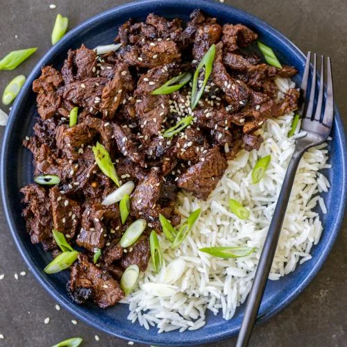

Beef Bulgogi

In my opinion, the best way to have beef
Beef Bulgogi, an icon in Korean barbecue, perhaps the simplest way to
prepare beef while yielding the best results. Beef Bulgogi is a simple yet
extraordinary dish which packs an exceptionally large pallet of flavors,
while also filling your belly. Commonly served with rice, sliced
vegetables, and kimchi, Beef Bulgogi never misses the spot.
Ingredients
- 5 Tablespoons soy sauce
- 1/4 cup chopped green onion
- 2 1/2 tablespoons white sugar
- 2 tablespoons minced garlic
- 2 tablespoons sesame seeds
- 2 tablespoons sesame oil
- 1/2 teaspoon ground black pepper
- 1 point flank steak, thinly sliced
Steps
-
Whisk soy sauce, green onions, sugar, garlic, sesame seeds, sesame oil,
and pepper together in a bowl
-
Place flank steak slices in a shallow dish. Pour marinade over top.
Cover and refrigerate for at least 1 hour overnight
- Prepare an outdoor grill for high heat, and lightly oil the grill
-
Quickly grill flank steak slices on the preheated grill until slightly
charred and cooked through, 1 to 2 minutes per side
- Serve hot over a bed of rice and enjoy!
Return to homepage